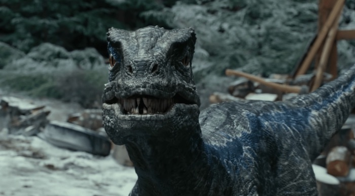

Jurassic World: Dominion
Plot Synopsis
Four years after the cataclysmic volcanic eruption on Isla Nublar and the Lockwood Estate incident, de-extinct dinosaurs freely roam the earth. Claire Dearing, former operations manager of Jurassic World, works for the Dinosaur Protection Group. She and Owen Grady live in a remote cabin in the Sierra Nevada mountains, secretly caring for Maisie Lockwood, Benjamin Lockwood's cloned granddaughter. Owen's trained Velociraptor, Blue, unexpectedly arrives with an asexually reproduced offspring which Maisie names Beta.
Biosyn Genetics conducts genomics research on dinosaurs, ostensibly seeking cures for diseases and agronomic applications. Unbeknownst to Claire and Owen, Biosyn wants to study Maisie's DNA for nefarious agendas. When Maisie, frustrated with living in seclusion, sneaks away, Biosyn operatives kidnap her and Beta. Elsewhere, swarms of formerly extinct giant locusts have inexplicably reappeared, threatening the global food supply. Paleobotanist Dr. Ellie Sattler observes that crops grown with Biosyn seed are left uneaten, leading her to suspect that Biosyn created the locusts. Believing the locust's DNA dates to the Cretaceous period, Ellie approaches former partner and paleontologist Dr. Alan Grant, who agrees to help investigate Biosyn.
With help from CIA contacts, Claire and Owen track Maisie and Beta to Malta, where they infiltrate a dinosaur black market. When authorities raid the market, dinosaurs are unintentionally released, causing havoc. A Biosyn employee informs Claire and Owen that Maisie and Beta are being transported to Biosyn's secluded headquarters and dinosaur valley in Italy's Dolomites mountain range. Kayla Watts, a sympathetic cargo pilot, offers to fly Owen and Claire there.
Chaos theorist Dr. Ian Malcolm, now working for Biosyn, invites Alan and Ellie to the headquarters to help him uncover CEO Lewis Dodgson's illegal activities. Aiding Ian is communications director Ramsay Cole. It is revealed that geneticist Dr. Henry Wu genetically engineered the locusts to only consume rival companies' crops so that Biosyn can dominate the agricultural market. Wu meets Maisie and explains that she is not a clone. Instead, Charlotte Lockwood, Benjamin Lockwood's daughter and Wu's former colleague, used her own DNA to create Maisie as her child. Charlotte died from a genetic disorder, but she had altered Maisie's DNA to make her immune. Wu believes that Maisie's and Beta's DNA are key to creating a pathogen to halt the locust outbreak.
Upon reaching Biosyn airspace, a group of Quetzalcoatlus attack Kayla's cargo plane. Claire ejects while Owen and Kayla survive a crash landing. Following separate encounters with a Therizinosaurus and a Pyroraptor, the three regroup. Inside the Biosyn facility, Ian and Ramsey provide Ellie and Alan access to a restricted lab where they steal a locust sample and encounter Maisie. After discovering the locust lab was breached, Dodgson ignites it to destroy all evidence, inadvertently starting a forest fire. He also ends Ian's employment for exposing his operation. Alan, Ellie, and Maisie find Ian, and they then meet up with Owen, Claire, and Kayla. Meanwhile, Dodgson attempts to escape with dinosaur embryos via a hyperloop; when the power fails, he becomes trapped and subsequently killed by three Dilophosaurus. Electronic devices call the dinosaurs to the Biosyn headquarters to protect them from the fire, while Owen captures Beta.
A Giganotosaurus terrorizes the group until the Therizinosaurus and the Tyrannosaurus rex kill it. The group escapes via helicopter, taking Wu, who claims he can eradicate the locusts, with them. Back on the mainland, Wu releases a locust carrying the pathogen he discovered, successfully wiping out the locusts.
Ellie and Alan renew their romantic relationship before joining Ian and Ramsay to testify against Biosyn. Owen, Claire, and Maisie return home and reunite Beta and Blue. Around the world, dinosaurs adapt to co-exist with modern animals while the United Nations declares Biosyn Valley a dinosaur sanctuary.